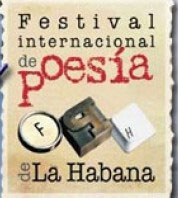

El Festival Internacional de Poesía de La Habana con el auspicio de la Unión de Escritores y Artistas de Cuba, Das Amt des Stadt-Historiker, Das Ministerium für Kultur, das kubanische Buch Institut, Das Zentrum für Exchange und Referenz. Gemeinschaftsinitiative (CIERIC), la Sociedad de Beneficencia Andaluza y la Fundación Cultural Asia-Iberoamérica, wird die 26 zu den 31 de mayo de 2014, en su edición bienal dedicada Nancy Morejón, a la oralidad y a la poesía escrita por mujeres.
Internationaler Support Committee
Thiago de Mello (Brazilien), Marcelino Dos Santos (Mosambik), Antonio Gonçalves (Angola), Zolani Mkiva (Südafrika), (Ecuador), Wolsan y Yang Samil (Korea), Juan Bañuelos (Mexiko), Hildebrando Pérez (Peru), Cristian Vögel (Ecuador), Fernando Rendon (Kolumbien).
Ehrenpräsident
Aitana Alberti, Pablo Armando Fernández, César López, Nancy Morejón, Miguel Barnet, Eusebio Leal, Waldo Leyva, Virgilio López Lemus, Alpidio Alonso, Jesus David Curbelo
ACTIVIDAES PRINCIPALES
Velada Palabra del mundo, Preis Rafael Alberti
Laboratorio de escrituras: La poesía oral y a la poesía escrita por mujeres
Kolloquium: La obra de Nancy Morejón, in seinem 70 Jubiläum:
Ellbogen auf der Brücke, en el bicentenario de José Jacinto Milanés
Panel dedicado al centenario de Samuel Feijoo
Seminario Palabras escritas en la arena por un inocente, en el centenario de Gastón Baquero
Encuentro de gestores de Festivales Internacionales de Poesía de Nuestra América
CubaPoesia Itinerante: Ciudad de Manzanillo
Startseite: Montag-Tag 26 Mai
Schließen: Sábado día 31 Mai
Coordinación general del Festival
Alex Pausides, Pierre Bernet, Pedro López Cerviño,
Carmen González, Karel Leyva, Jamila Medina, Sinecio Verdecia, Jorge Bousoño,
Teresa Hill, Marlene Alfonso, Betsy Red, Tania Echavarría, Lourdes Díaz.
Vereinigung von Schriftstellern und Künstlern aus Kuba.
Straße 17 # 354 zwischen G und H, Vedado, Ciudad De La Habana, Teléfono 832 4152 (53-7) 833 3158 Fax
Estoy emocionada al enterarme que ya inicaron los preparativos para el XVII FESTIVAL DE POESÍA de CUBA.En el anterior festival estuvimos presentes una delegación de ECUADOR .Fue gratísima la experiencia que vivimos y nos gustaría participar otra vez.Felicitaciones a sus organizadores.
como puedo participar en este evento ,cuales son las recomendaciones .
Vivir la poesía en Cuba es sentir a Martí, y a tantos poetas con esencia en el alma, la poesía nos une, nos humaniza, nos deleita el espíritu, gracias a Dios vivimos esa experiencia en el 2012, y desde Ecuador estaremos presente, si el Creador nos permite. Éxitos compañeros poetas.
Muy buenas.. soy Promomtor Cultural de la Universidad Bolivariana de Venezuela y me gustaria obtener informacion para la inscripcion en este festival ya que sería para nosotros de mucho valor que la universidad pudiera representar a mi pais (Venezuela) en este prestigioso festival… Agradezco cualquier informacion
apreciables amigos organizadores del XVII festival Internacionl de poesia de La Habana, un placer inmenso el saber que ye nos encontramos ante un festival grandioso de poesia en la Habana, el año pasado participe y para mi fue una experiencia maravillosa, me gustaria participar este año dos mil trece, espero su respuesta, Vielen Dank. SANTIAGO VÁSQUEZ, EL SALVADOR CENTRO AMERICA.
Soy Edmundo Retana, poeta de Costa Rica. Estuve, conmovido, emocionado, en el Festival de poesía de la Habana del 2012. Me gustaría volver en el 2014. Con quien me contacto?. Ya envié un correo a los organizadores, pero no se si los contactos son los mismos. Vielen Dank.
Hallo, me interesa saber acerca de algún evento de poesía en Costa Rica para 2014. Segen!
Hola Marina, tal vez quieras visitar la web rednuestraamericadepoesia e informarte de festivales y acciones poéticas en Costa Rica. También puedes contactar con sus organizadores para que te hablen de las opciones que tienen.
Alles Gute
Mi nombre es Mily Roche ,soy mujer poeta cubana y estoy interesada en participar en este festival de poesía que se celebrara en el 2014 .¿que tengo que hacer para inscribirme ?
gracias .saludos
Ich bin kolumbianische Dichter – JOSE GUZMAN CARRASCAL- deseo participar en este festival- 2014 – que tengo que hacer para inscribirme, espero pronta repuesta, Vielen Dank.